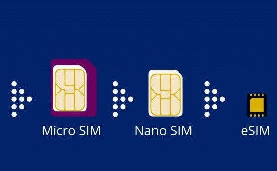

eSIM vs SIM card: which is more secure? can we switch to eSIM?
For years, upgrading your smartphone meant physically switching your SIM. These days, phone manufacturers and a growing number of carriers are pushing a virtual alternative. Enter the eSIM, touted as the smarter, hassle-free alternative to that fiddly little card. But how well do eSIMs stack up on the security front? Do they usher in any new risks we need to be aware of? Here’s a closer look…
Your SIM (subscriber identity module) is a chip that enables you to connect to your carrier network. It usually holds other information, too: e.g. texts, contacts and (depending on your phone configuration) emails. With the new eSIM system, “e” stands for embedded. Instead of a removable plastic card, the eSIM is embedded into your phone’s circuitry. Start a new contract and your eSIM is activated remotely by the network provider. It’s also reprogrammable remotely. An increasing number of phones incorporate an eSIM. This includes the current crop of iPhones, the Samsung Galaxy S20 and Google Pixel 3. At present, eSIM support comes alongside a traditional SIM card slot. In the next few years, we’re likely to see eSIMs replace cards completely. Globally, network providers are also starting to switch to eSIM activation.
hat are the benefits of eSIMs?
Easier switching. Let’s say you want to ditch your current network in favour of another. With an eSIM, your new contract can be activated remotely there and then. There’s no need to wait for your new SIM card to arrive through the mail. Multiple networks. With an eSIM, there’s no reason why you can’t house more than one network on the same phone. This may be especially handy for frequent travellers, allowing them to switch between local networks as and when needed. Smartphone design. When the card tray is eventually phased out, this could mean more room for other features (battery life, for instance). That said, this could be bad news for fans of removable storage cards!
SIM swap attacks
Also known as SIM splitting or simjacking, this type of attack is where a fraudster tricks your network provider or mobile carrier store into activating a new SIM in the fraudster’s possession. To launch a sim swap, an attacker firstly gathers information on their victim. This information may be obtained through snooping on social media, through phishing emails, with the help spyware previously activated on the victim’s device, or from information previously exposed through data breaches. The fraudster contacts the victim’s mobile network provider (or mobile carrier store who are less educated), impersonating the victim and claiming to have lost or damaged their SIM card. They ask the network provider to activate a new SIM, already in their possession. Once in, they then have access to the victim’s communications. In itself, the introduction of eSIMs does nothing to reduce this risk. After all, if a company can be tricked into transferring information from one location to another, the SIM format actually makes no difference. Richi Jennings highlighted this recently in TechBeacon. He reports an instance of someone who bought an unlocked iPhone. They went to their carrier store asking for their profile to be switched over to the iPhone’s inbuilt eSIM. This was done with no verification requests - or even having to hand over the old SIM card. Mobile carrier stores are soft targets compared to the more educated network provider. Fraudsters are now trying phishing attacks to take over mobile carrier store computers to get access to internal tools that enable SIM swapping. Its also very easy to use carrier insiders for SIM swap replacements. The lesson is that eSIMs don’t solve ID fraud. For this, smartphone owners should make sure they have strong account protection measures in place. This includes a unique password, along with security recovery questions that can’t be guessed from browsing your online info. And of course, you are still reliant on your carrier and stores actually carrying out those checks before activating a swap.
Device theft
Some thieves are not looking for data: they just want your phone. Currently, so long as they can disable any device restrictions, a thief can hard-wipe the phone and remove the existing SIM to make it ready for resale. An eSIM makes this a lot harder. It’s not possible to delete an existing eSIM profile without the owner’s password. Nor is it possible to add a new profile without the existing owner’s authentication. If someone is foolish enough to buy a stolen phone with someone else’s profile still active, it’s going to be pretty easily traceable.